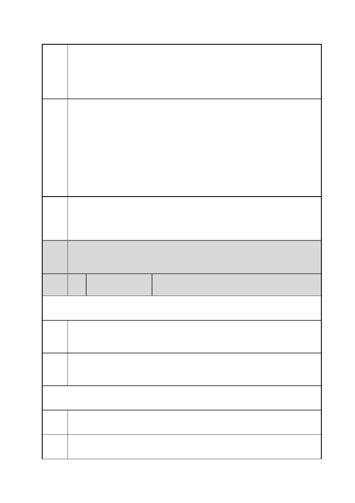

臺北市都市計畫委員會 公民或團體陳情意見綜理表
案
名
市府
回應
委員
會議
決議
編
號
「變更臺北市信義區逸仙段二小段 33 地號等 21 筆土地（原臺北機廠）
工業區為創意文化專用區、特定專用區、道路及綠地用地主要計畫案」
及「擬定臺北市信義區逸仙段二小段 33 地號等 21 筆土地（原臺北機
廠）創意文化專用區、特定專用區、道路及綠地用地細部計畫暨劃定
都市更新地區計畫案」
綜合以上各點，台鐵台北機廠作為台灣近代化重要的建築與機械技術
標地，如官署只是在已有北美館的重複投資下，拿著國外的範例胡亂
照抄，是否能就此提升台灣的文化素養與文化產業的深度？大家應該
都不會相信。另外，基於台灣是華人世界最民主的聖地，其價值在於
公民參與的尊重度，官方單位對此也責無旁貸；相關的議案，肯定不
是透過表面上華麗的辭彙與空洞的簡報來掩蓋與模糊焦點，而是透過
溝通，更誠懇的聆聽與修正，讓市民／國民透過積極參與產生高度共
識決，這才是脫離欺瞞與封建專制的外衣，走向成熟公民社會的唯一
道路。
一、有關臺北機廠再利用之定位及鐵道文化資產之保留方式，詳如編
號 1 市府回應內容。
二、有關民間參與臺北機廠規劃過程之建議，詳如編號 12 市府回應
說明一。
內容同編號 1。
15 陳情人
鄧○忠
102.12.10.第一次陳情
陳情
理由
建議
辦法
一、針對案內市府計畫中擬將臺北機廠組立工廠改為美術館，故特重
採光及通風。
二、案內西露天吊車不宜改為園內動線。
一、美術館作品保存對採光及溫濕度要求極為嚴格，故原設計相違
背。建議將細部計畫中應將「美術館」移除，改為「鐵道車輛展覽館」。
二、宜保留露天吊車區，方得完整全區。
102.12.17.第二次陳情
陳情
理由
建議
辦法
案內有關廠區變更為美術館一案。
1.因原始廠區設計不利美術展覽，建議維持機廠原設計。
2.建議改為鐵路博物館。
第 27 頁/共 154 頁